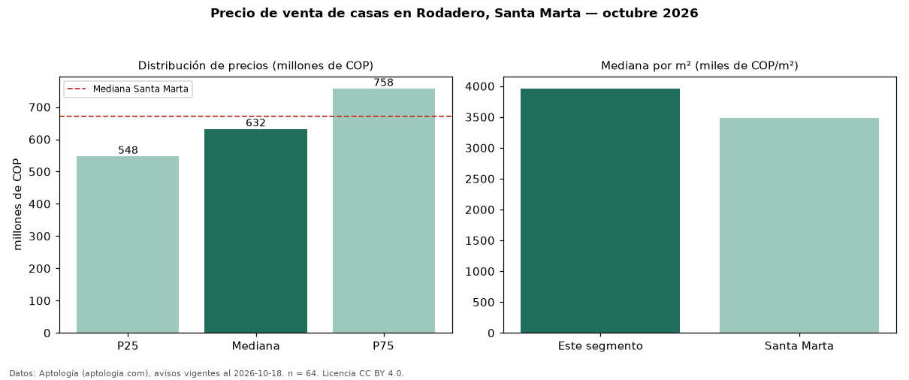

Precio de venta de casas en Rodadero, Santa Marta — octubre 2026
En Rodadero, Santa Marta, la mediana de precio de venta de casas es COP 632 millones, según 64 avisos vigentes. Frente a la mediana de Santa Marta para casas (COP 670 millones), queda 6 % por debajo. Por metro cuadrado, la mediana es COP 3,96 millones/m² (n = 64 avisos con área), 14 % por encima de Santa Marta (COP 3,49 millones/m²). Por precio mediano es el puesto 8 de 9 barrios de Santa Marta con al menos 30 avisos de casas en venta (COP): entre las más económicas. El área mediana anunciada es 157 m². El segmento con más oferta es el de 3 o más habitaciones (60 avisos, mediana COP 645 millones). La administración mediana declarada es COP 630.000 al mes (n = 45). El estrato más frecuente es 6 (70 % de los avisos con estrato). Datos: Aptología (aptologia.com), CC BY 4.0 — https://www.aptologia.com/casas-en-venta/santa-marta/rodadero. Archivos: PDF, CSV con las cifras y gráfica PNG.

| Avisos únicos | 64 |
|---|---|
| Percentil 25 | COP 547.500.000 |
| Mediana | COP 632.500.000 |
| Percentil 75 | COP 757.500.000 |
| Mediana por m² | COP 3.962.122 |
Fuente: avisos vigentes de portales inmobiliarios recopilados por Aptología, deduplicados (mínimo 30 avisos únicos por celda). Precios pedidos, no cerrados. Fecha: 2026-10-18.